Criando seu primeiro projeto Maven Web com framework Spring pré configurado
Caso ainda não tenha feito, execute os primeiros passos de nosso tutorial. Feito isso, prossiga para o passo seguinte.
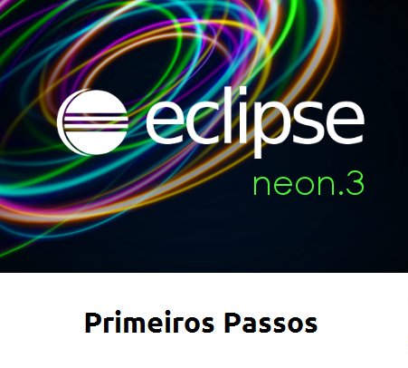Agora que já realizou os primeiros passos, baixe o projeto exemplo neste link
Depois de baixado, extraia o conteudo do arquivo dentro do seu workspace
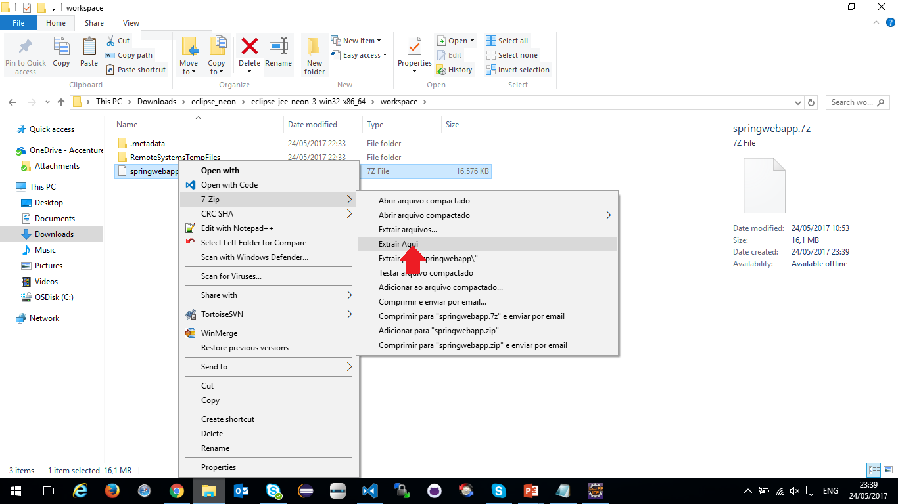Após a extração, volte ao eclipse e clique com o botão direito do mouse para importar um projeto já existente
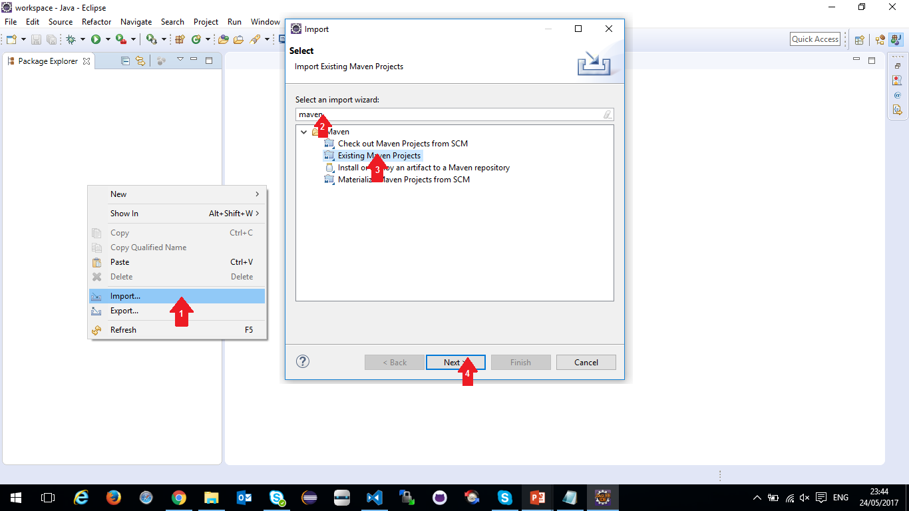Clique em "Browse..." e, logo em seguida, clique em "Ok", para selecionar seu workspace
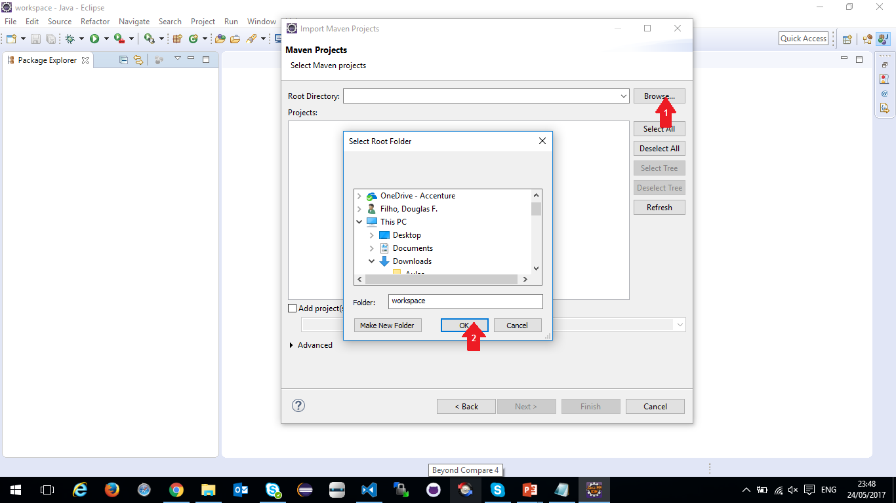Selecione o projeto e clique em "Ok"
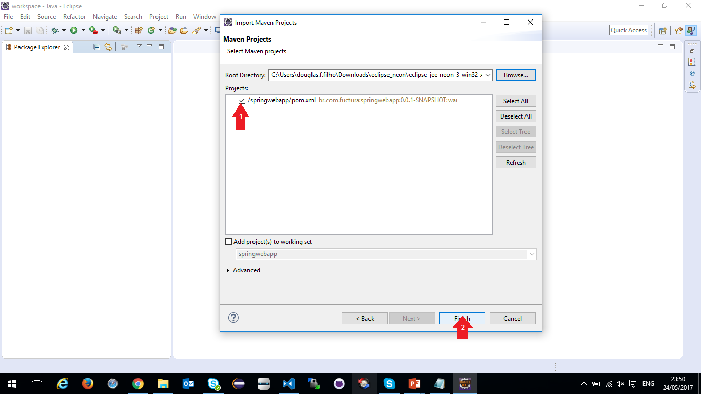Aguarde enquanto as configurações do projeto são baixadas e instaladas
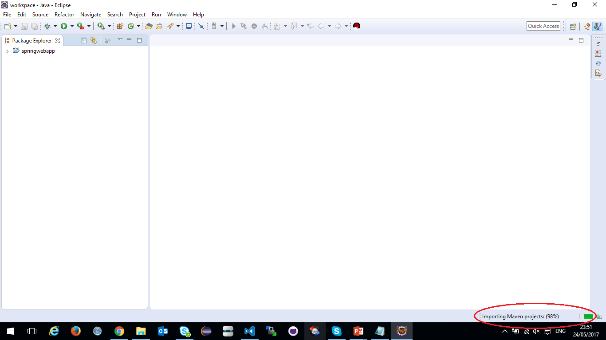Pode ser que algum arquivo apresente erros devido à importação não ter sido completada
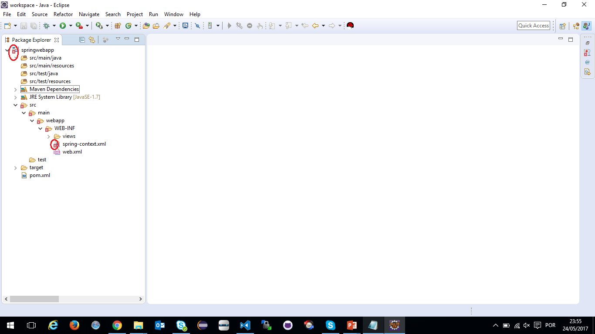Para resolver, clique com o botão direito do mouse sobre o nome do projeto, clique em "Maven" e clique em "Update project". Depois clique em "Ok" e aguarde a atualização.
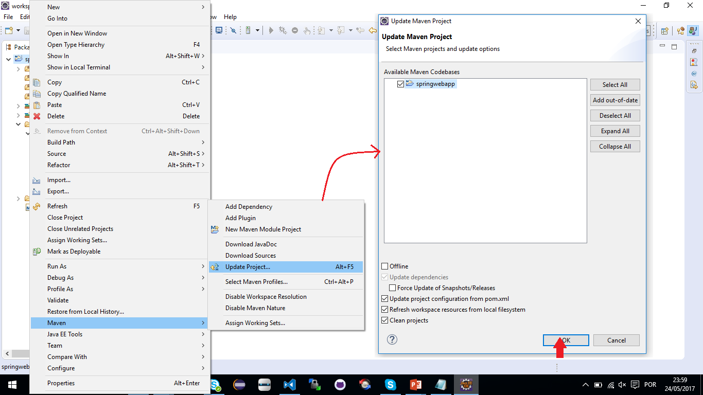Configure o maven para realizar o deploy da aplicação
Clique com o botão direito do mouse sobre o projeto e selecione "Run as" > "Maven build..."
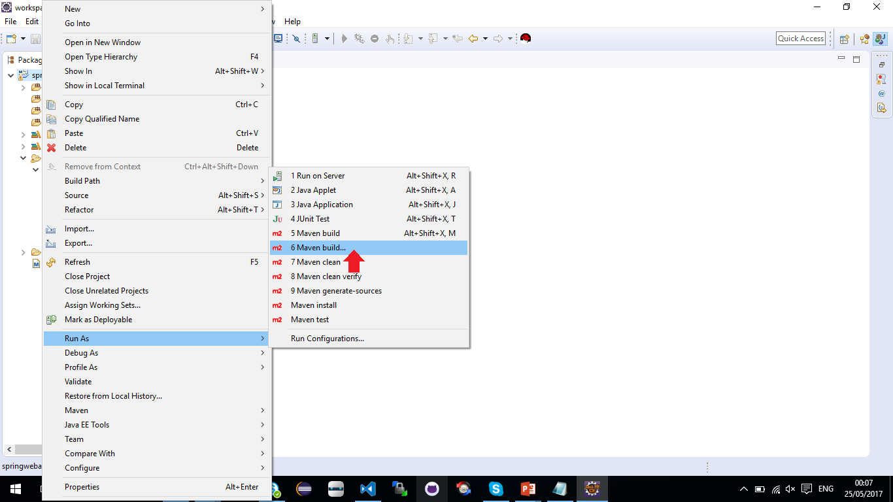No campo "Goals" digite "clean tomcat:deploy", clique em "Apply"
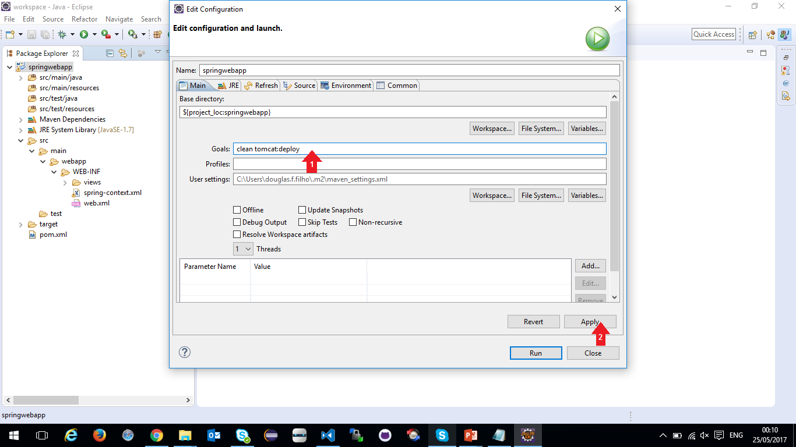Baixe o Apache Tomcat 8. Descompacte o arquivo em alguma pasta de seu desejo. Após descompactar o arquivo, entre na pasta "bin" e execute "startup.bat".
Aguarde o tomcat iniciar e mostrar a mensagem de "startup" conforme a imagem
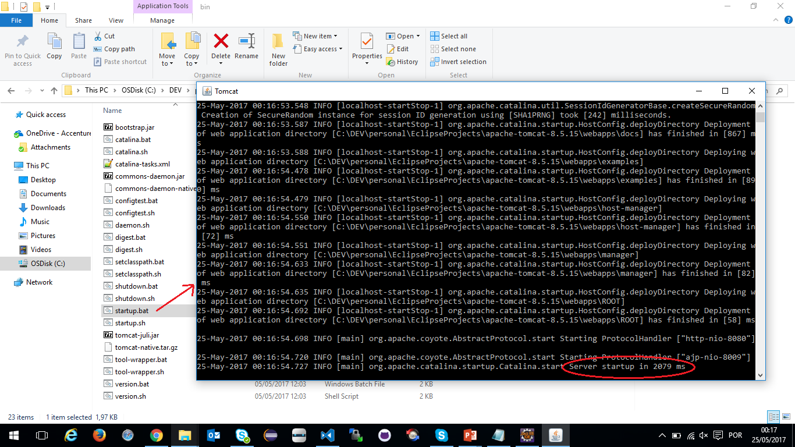Volte no eclipse e clique em "Run"
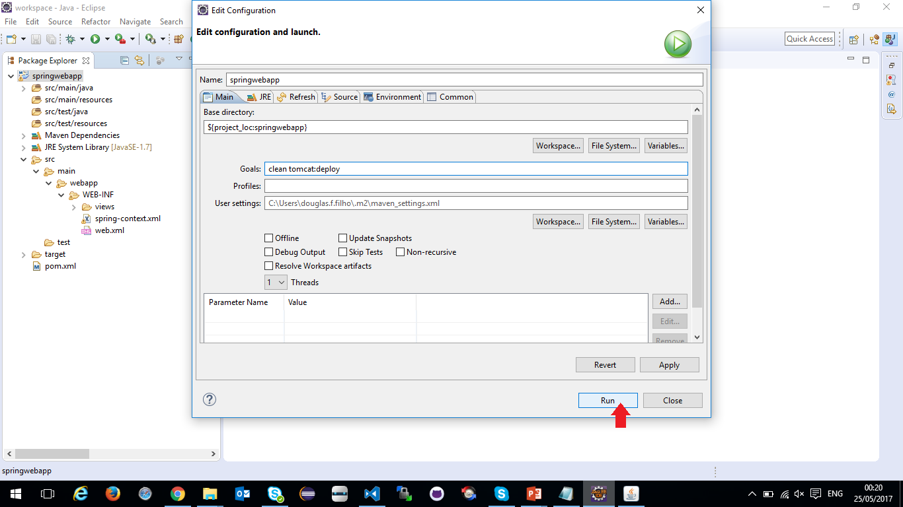Aguarde aparecer a mensagem de "BUILD SUCESS" e copie a URL da aplicação conforme mostrada na imagem.
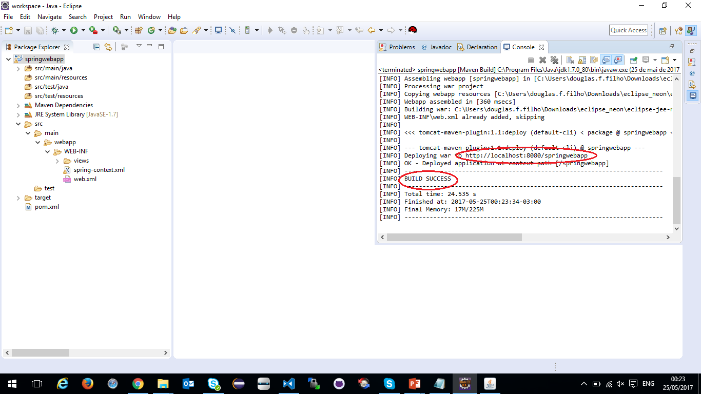Abra a aplicação no navegador usando a URL copiada
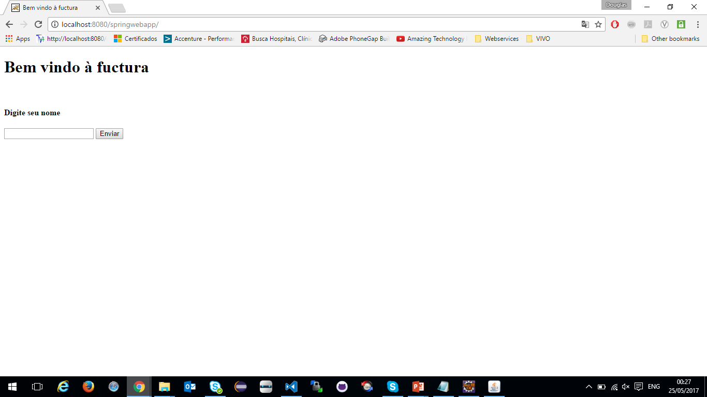Continue nos acompanhando, acesse nossa home e veja o quanto pode aprender com Java.
Até mais!